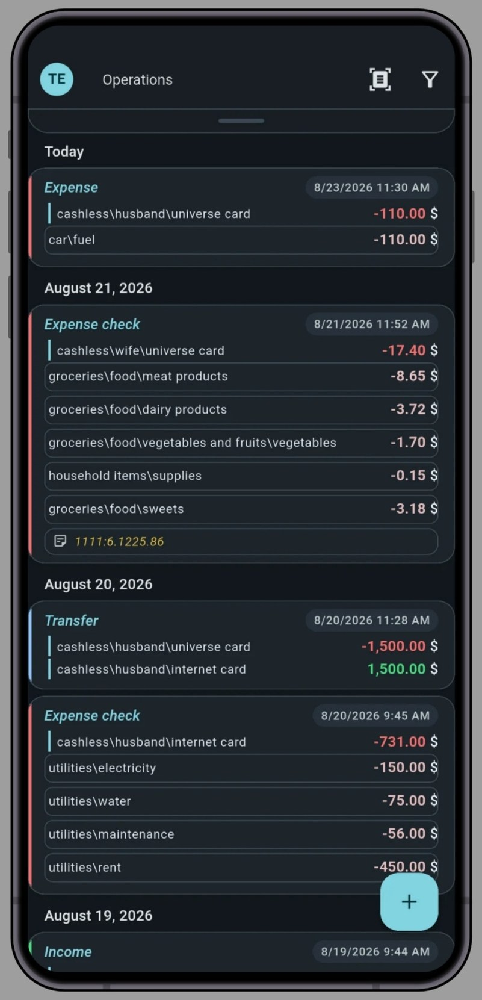
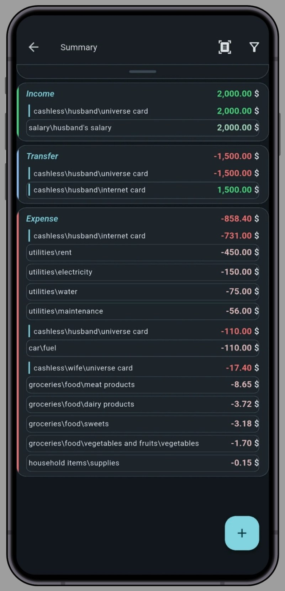
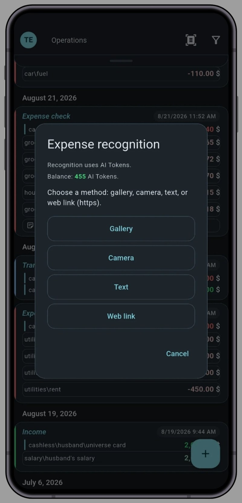
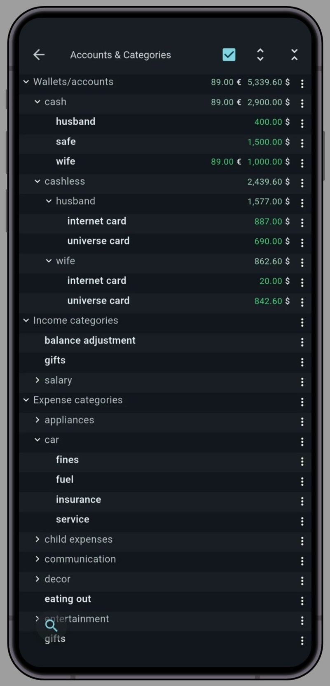
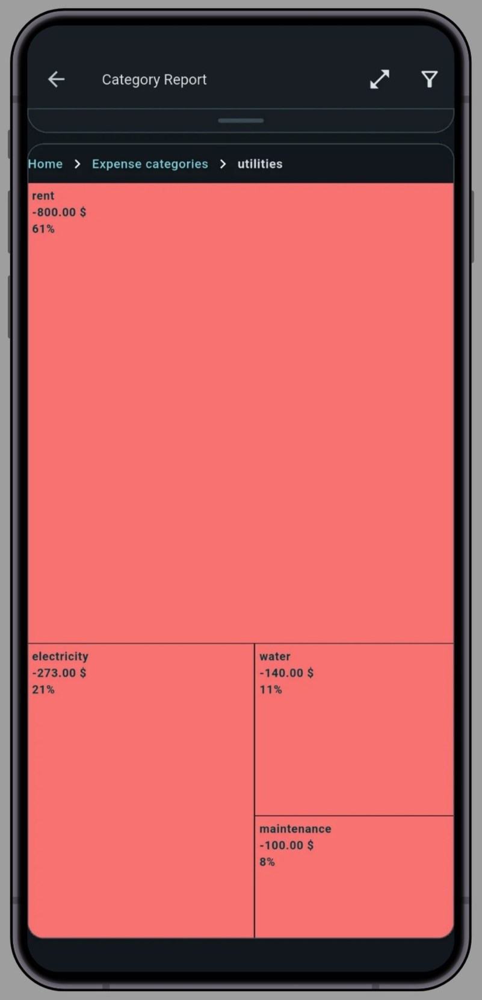
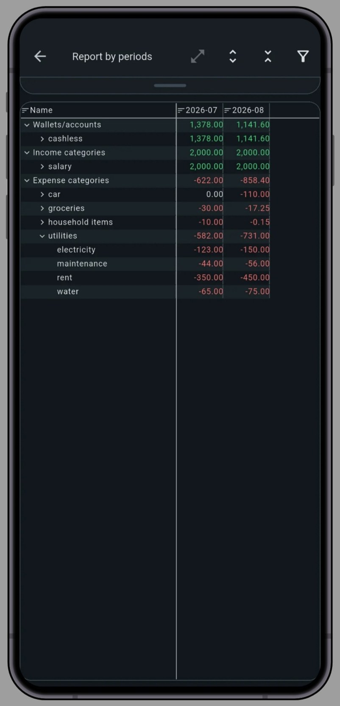
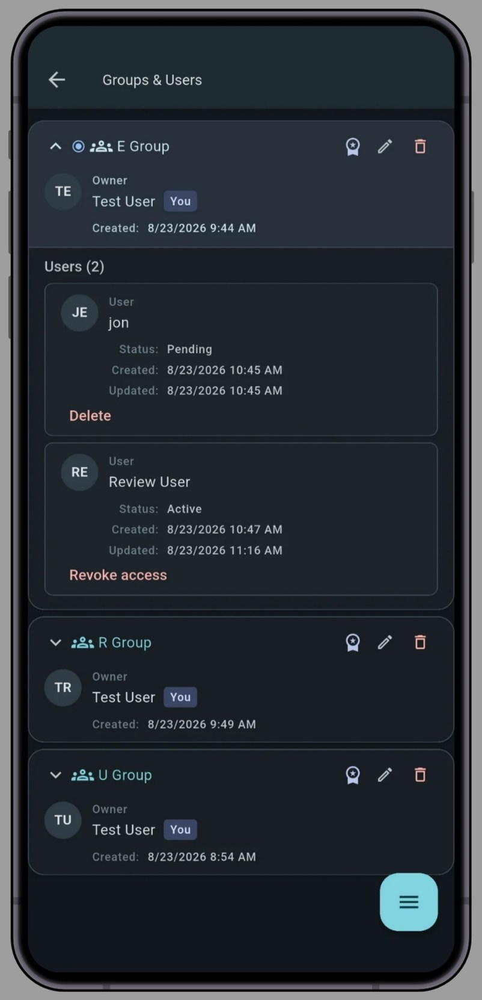
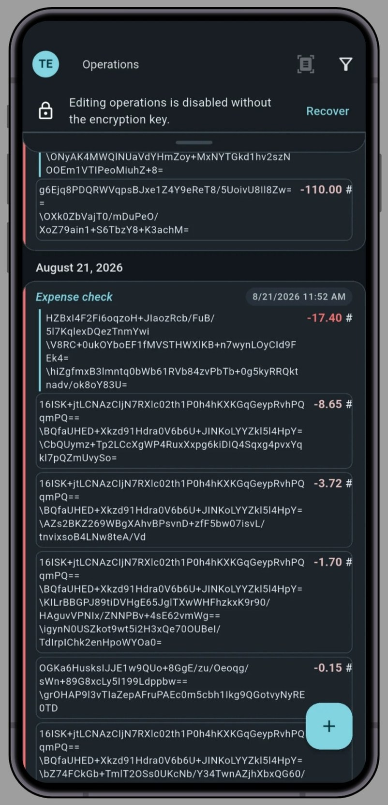

Стрічка операцій — уся ваша фінансова історія в одному місці
Стежте за доходами, витратами, переказами й обміном валют. Користуйтеся гнучкими фільтрами за датою, рахунками або категоріями, щоб знайти потрібні записи.
Якщо ви шукаєте надійний менеджер витрат, зручну книгу обліку для родини або інструмент для контролю грошей у малому бізнесі, тут повний набір професійних функцій без перевантаженого інтерфейсу.


Стежте за доходами, витратами, переказами й обміном валют. Користуйтеся гнучкими фільтрами за датою, рахунками або категоріями, щоб знайти потрібні записи.

Усі операції автоматично групуються за рахунками й категоріями, щоб ви одразу бачили загальну картину.

Просто завантажте фото, знімок екрана, QR-код, текст або посилання. Розумний сканер миттєво розпізнає окремі позиції, автоматично згрупує їх за категоріями і створить готову фінансову операцію без ручного введення.

Власна структура, без шаблонів. Будуйте глибоку багаторівневу ієрархію рахунків, категорій, підкатегорій і віртуальних гаманців із необмеженою вкладеністю.

Дивіться звіти за доходами, витратами й рахунками за будь-який період. Натискайте на блоки, щоб перейти на рівень нижче, а кнопкою відкрийте список операцій, з яких склалася сума. Будь-який звіт можна на ходу перерахувати в іншу валюту.

Аналізуйте доходи, витрати й рахунки в динаміці з групуванням за днями, тижнями, місяцями, кварталами або роками. Розгортайте вбудовану ієрархію категорій прямо в таблиці, а застосунок перерахує звіт у потрібну валюту. Це дає змогу об’єктивно оцінювати фінансові тенденції й інфляцію в довгостроковій перспективі ведення обліку.

Усередині одного профілю можна вести кілька незалежних груп. Власник запрошує людей електронною поштою, і всі ведуть спільні витрати в реальному часі (родина, команда, особистий проєкт).

Примітки, назви рахунків і категорій, а також назви, коди й символи ваших валют шифруються на вашому пристрої (AES-256-GCM) ключем, який захищено вашою секретною фразою. На сервері цей текст зберігається лише в зашифрованому вигляді.